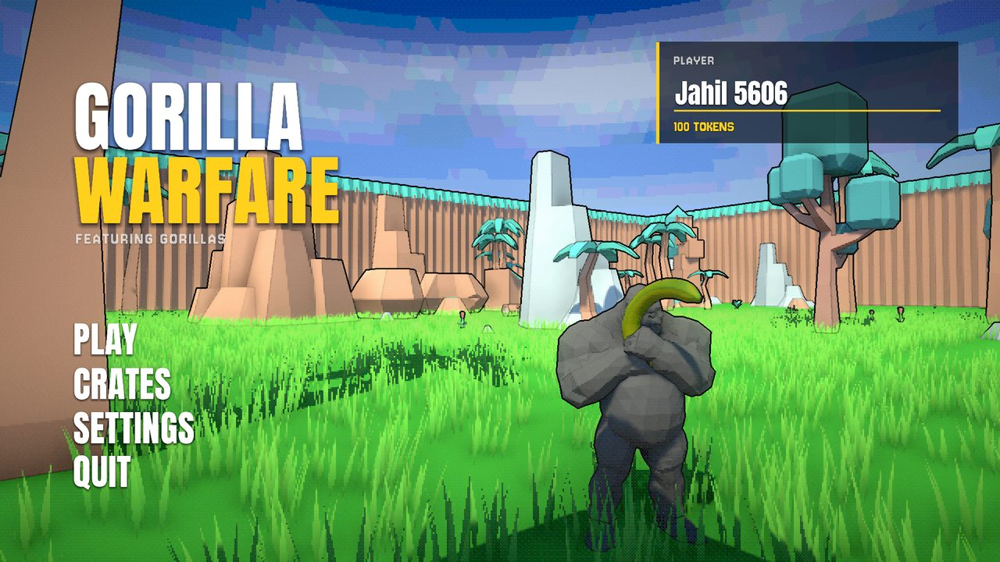
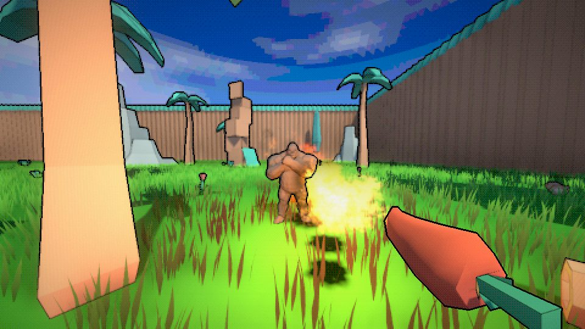
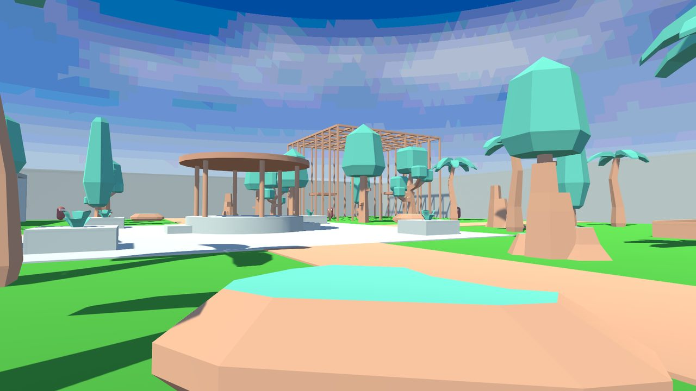
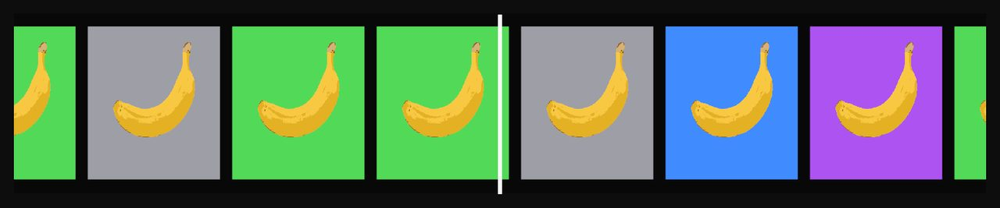

A multiplayer FPS where everyone plays a gorilla and fights with bananas. It outgrew that sentence a while ago.

The original five are bananas at different shapes, not just a different size anymore, and the new three branched out into the rest of the fruit bowl. Internally they stay named by role (Pistol, Gatling, Flamer and so on) because the gun game ladder reads at a glance that way. What you actually see on screen is fruit.
Balance is checked by a script, not eyeballed. It caught a real problem early on: the pistol was doing 221 damage per second against the automatic rifle's 210, which made the "harder to use" gun strictly worse. Current numbers land the pistol at 34 damage, 5 shots a second, 3 hits to kill. The rifle does 21 a hit at 10 shots a second, 5 hits to kill, and sprays.

red hot chili pepper, working as intendedDeathmatch rolls a random set of three weapons and the most kills wins when the clock runs out. Gun game puts everyone on a fixed ladder (Pineapple, Sniper, Gatling, Shotgun, Flamer, Rifle, Pistol, Peel), two kills to advance, 15 to win, and the run only ends with a melee finish. Team deathmatch is the same weapon roll, scored by side instead of by player. All three live entirely in Photon room properties rather than local fields, which is what makes a late join or a host migration just work instead of needing its own catch-up code.
The original jungle arena finally has company. Maps are a real system now: a map list, a map card the host picks from in the lobby, late joiners loading whatever the room picked, and one shared HUD every map gets instead of a copy per scene. The second map is a Zoo, because a game about gorillas was always going to end up in one: a plaza, four avenues and four enclosures (a pool, a rock enclosure, a reptile house and an aviary). It's still a greybox, built by a script so I can rework it by hand. Pick it and the lobby's backdrop switches to the Zoo too.

the zoo, greybox eraWalls and floors get real bullet holes. Gorillas get the same hole with gore off, and a bloody wound with spray and splatter with it on, which it is by default. There's also an optional PSX filter, colour quantization plus an ordered dither, that covers the gun as well as the world. Matches pay out tokens scaled to your style score, and tokens open crates on a proper spinning carousel. Opening one currently wins you nothing. The ceremony is finished, the loot isn't.

gambling, but for bananasSlide at speed, hop out of it, and land back into another slide to chain speed instead of losing it. A ground slam trades height for distance. An air brake kills your horizontal speed almost instantly, which sounds like the boring one until you notice it is also the only counter-play against everyone else's momentum. A ledge hop gives you one extra jump near a wall worth jumping at, gated so it can't be spammed. Two earlier ideas, a scripted vault and an auto-latching wall run, both got built, both got played, and neither survived contact with an actual playtest, so both were cut outright rather than retuned a third time on a guess.
Kills climb a multiplier through five ranks: PEELING, RIPE, GOING BANANAS, FULL SILVERBACK, RAMPAGE. Headshots, no-scopes, point-blank finishes and weapon swaps all add on top of a kill's base value, the multiplier decays after four seconds of quiet, and getting hit or smashing into a wall cuts it hard. Score, not raw kill count, is what actually decides deathmatch and team deathmatch now. Gun game still runs on its ladder, since that already is its own progression system.
Not a mood board, a checklist. Loud instead of tasteful, saturated and clashing on purpose, no tasteful dark grey with one accent colour. Text sized and placed like part of the composition, not a label sitting on top of it. Hard cuts between states instead of fades, because a fade reads as slow and polite and this game is neither. Readable underneath all of it, the same way ULTRAKILL stays chaotic without ever hiding your own health bar. And funny is allowed, because it's a game about monkeys shooting each other with bananas, and pretending otherwise would be the actually embarrassing choice.
The Pomo-Grenade, the third new weapon. Two more maps, a Jungle Temple and Canopy, and then map voting. Crates that actually give you something: titles, kill effects and wearables, earned with tokens only. Real sounds for the grapes and the chili, which are still borrowing other weapons' audio. A Steam launch is still the plan, and the move off Photon PUN 2 (end of life, but working) is deliberately sequenced after it, not before.